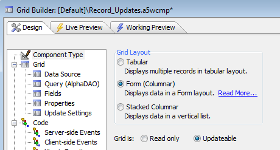
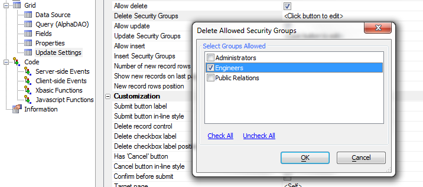
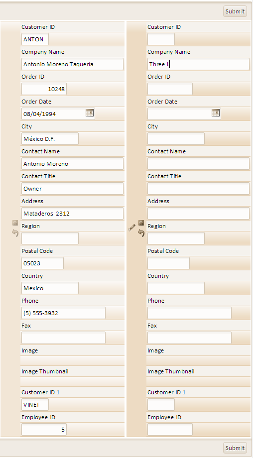
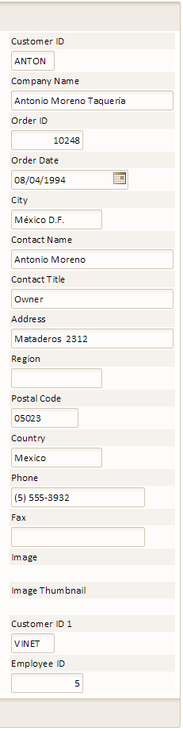

Controlling Record Update
|
Procedure:
1. If you have set up Web Security already, Go to the Web Projects
Control Panel and click
 to
open the Select Grid Component Dialog.
to
open the Select Grid Component Dialog.
1. Alternatively, click New on the Web Projects Control Panel toolbar.
2. In the New File Dialog select Web Component and click Next >.
3. When asked what type file you want to create, click Grid and Next >.
2. The Select Grid Component Dialog will load. Leave the 'Start with a blank Grid Component' radio button checked and click OK.
3. The Grid Builder Dialog will load. On the Component Type page at the top of the Component Type tree menu select the Grid is: Updateable radio button. The Update Settings option will not appear in the Component Type tree if you do not select Updateable.

4. Go to Grid > Update Settings.
5. Under the Update Settings Permissions options you can adjust a groups ability to delete, update, or insert records into a component. The permission property for a grid is compared to a protected session variable named session.protectedSecurityLevel. Your application code should set this variable to reflect the permissions of the current user
Deleting Records
If you want to allow the user to delete records, optionally change the Permissions > Delete Security Groups. The groups of users you select from the Select Groups Allowed menu on the Delete Allowed Security Groups Dialog will be allowed to delete records. If a user does not belong to one of these allowed groups then delete check boxes in the grid and delete buttons in the detail view will not be displayed.

Modifying Records
Similarly, if you want to allow the user to update records, optionally change the Permissions > Update Security Groups settings by clicking the <Click button to edit> text next to the option. The groups you select will be allowed to edit records. If the user is logged on with insufficient security for update, delete and insert, then the 'Submit' button on the Grid will not be displayed.
Inserting Records
If you want to allow the user to insert records change the Permissions > Insert Security Groups setting. Users with an insert security permission will be allowed to insert records. If the user is logged on with an insufficient Security Level then the 'Add' button is in the Detail View will not be displayed.
Below you can see how adding permissions to a grid alters their final look. This is the same grid that was created in the 'Creating a Grid for Microsoft Access Using the SQL Builder' Guide. The user on the left can enter information into open fields, delete it, save entered information, undo changes using the undo button, and ultimately Submit everything. The grid on the right has had security added to it such that only one group has access to it. Users without access can see records in this grid but they can not alter those records or add new ones.
 
No Security
See Also
Setting Grid Control Properties
Web Application Security Guide
Limitations
Web publishing applications only.